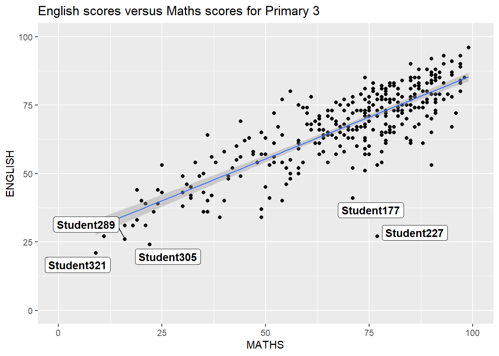
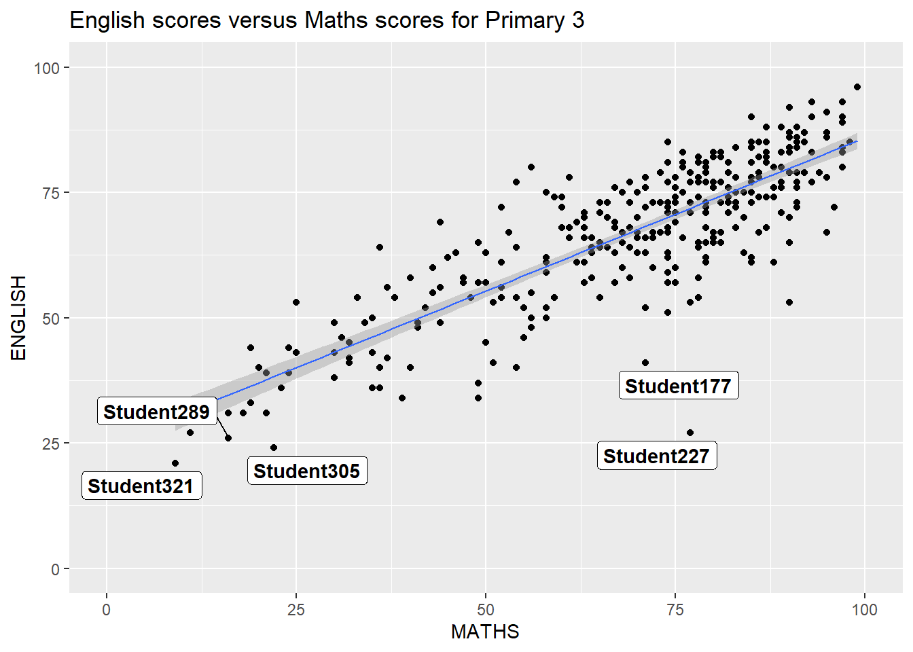
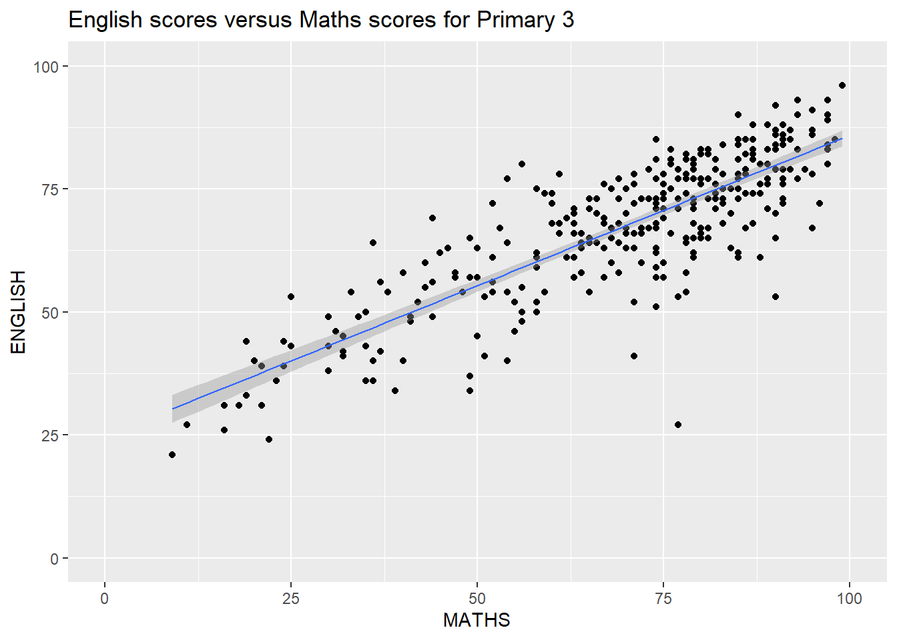
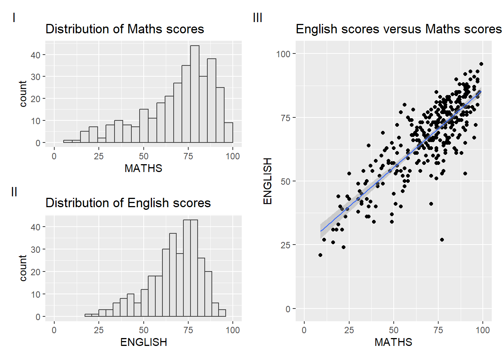

pacman::p_load(ggrepel, patchwork,
ggthemes, hrbrthemes,
tidyverse) Hands-on_Ex2
2.1 Overview
This week hands-on exercise will use ggplot2 extensions
control the placement of annotation on a graph
create professional publication quality figure
create composite figure : combining multiple graph into one
2.2 Getting started
2.2.1 Install and load libraries
R packages needed other than tidyverse:
ggrepel: prevent overlapping text labels
ggthemes: provide extra themes, geoms, and scales
hrbrthemes: typography-centric themes
patchwork: preparing composite figure
2.2.2 Importing data
exam_data <- read_csv("data/Exam_data.csv")2.3 Ggrepel
Without using ggrepel

ggplot(data=exam_data,
aes(x= MATHS,
y=ENGLISH)) +
geom_point() +
geom_smooth(method=lm,
size=0.5) +
geom_label(aes(label = ID),
hjust = .5,
vjust = -.5) +
coord_cartesian(xlim=c(0,100),
ylim=c(0,100)) +
ggtitle("English scores versus Maths scores for Primary 3")
2.3.1 After applying ggrepel

ggplot(data=exam_data,
aes(x= MATHS,
y=ENGLISH)) +
geom_point() +
geom_smooth(method=lm,
size=0.5) +
geom_label_repel(aes(label = ID),
fontface = "bold") +
coord_cartesian(xlim=c(0,100),
ylim=c(0,100)) +
ggtitle("English scores versus Maths scores for Primary 3")
After comparing the graph made with ggrepel and without ggrepel, we can clearly see that ggrepel help to manage the separation among all the label tags
2.4 Ggplot2 themes
Without using themes in ggtheme

ggplot(data=exam_data,
aes(x = MATHS)) +
geom_histogram(bins=20,
boundary = 100,
color="grey25",
fill="grey90") +
theme_gray() +
ggtitle("Distribution of Maths scores") 
2.4.1 After applying ggtheme

ggplot(data=exam_data,
aes(x = MATHS)) +
geom_histogram(bins=20,
boundary = 100,
color="grey25",
fill="grey90") +
ggtitle("Distribution of Maths scores") +
theme_economist()
2.4.2 Working with hrbthems

ggplot(data=exam_data,
aes(x = MATHS)) +
geom_histogram(bins=20,
boundary = 100,
color="grey25",
fill="grey90") +
ggtitle("Distribution of Maths scores") +
theme_ipsum()
The changes showed in the graph is that the text move under the end of x and y axis. Now let’s make the change more specific to see where the element of hrbrthemes should be used.

ggplot(data=exam_data,
aes(x = MATHS)) +
geom_histogram(bins=20,
boundary = 100,
color="grey25",
fill="grey90") +
ggtitle("Distribution of Maths scores") +
theme_ipsum(axis_title_size = 18,
base_size = 15,
grid = "Y")
So, in this graph, we further applied hrbthems package as specify the size of the title and add grid.
2.5 Beyond Single Graph : Combine multiple graphs
Single graph 1-Distribution of maths scores

p1 <- ggplot(data=exam_data,
aes(x = MATHS)) +
geom_histogram(bins=20,
boundary = 100,
color="grey25",
fill="grey90") +
coord_cartesian(xlim=c(0,100)) +
ggtitle("Distribution of Maths scores")Single graph 2-Distribution of English scores

p2 <- ggplot(data=exam_data,
aes(x = ENGLISH)) +
geom_histogram(bins=20,
boundary = 100,
color="grey25",
fill="grey90") +
coord_cartesian(xlim=c(0,100)) +
ggtitle("Distribution of English scores")Combined graph -English score vs Math score

p3 <- ggplot(data=exam_data,
aes(x= MATHS,
y=ENGLISH)) +
geom_point() +
geom_smooth(method=lm,
size=0.5) +
coord_cartesian(xlim=c(0,100),
ylim=c(0,100)) +
ggtitle("English scores versus Maths scores for Primary 3")2.5.1 Creating Composite Graphics: using patchwork
Usage of patchwork:
Two-Column Layout using the Plus Sign +
Parenthesis () to create a subplot group
Two-Row Layout using the Division Sign
/
2.5.2 Combine two ggplot2 graphs (“+”)

p1 + p2
2.5.3 Combining three ggplot2 graphs
“|” operator to stack two ggplot2 graphs,
“/” operator to place the plots beside each other,
“()” operator the define the sequence of the plotting.

(p1 / p2) | p3
2.5.4 Creating a composite figure with tag

((p1 / p2) | p3) +
plot_annotation(tag_levels = 'I')
2.5.5 Creating figure with insert
Insert one graph inside another one graph

p3 + inset_element(p2,
left = 0.02,
bottom = 0.7,
right = 0.5,
top = 1)
2.5.6 Creating a composite figure using both patchwork and ggtheme

patchwork <- (p1 / p2) | p3
patchwork & theme_economist()